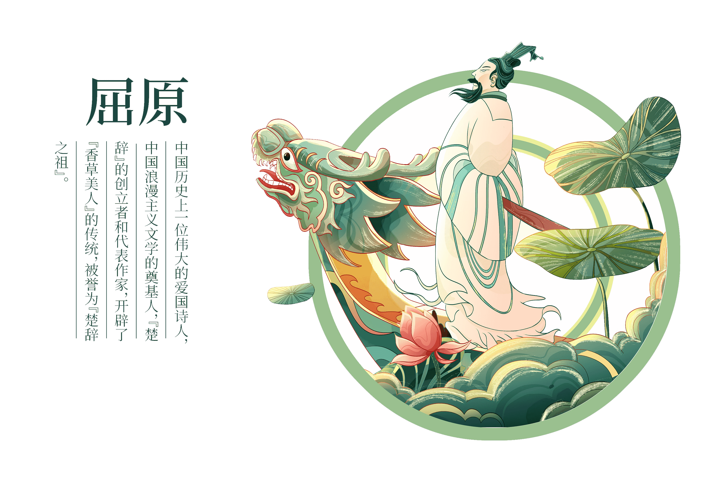

端午节，又称龙舟节、重午节、午日节等，是中国传统的节日之一，也在一些亚洲国家和地区有所庆祝。其时间定在农历五月初五，有着丰富的文化内涵和历史渊源。下面简要介绍端午节的由来、涵义、习俗、以及与之相关的文学和文化内涵。
▶由来与涵义
端午节的由来有多种说法，最广为人知的是纪念屈原，一位楚国的爱国诗人。据说屈原在被排挤后，选择在五月初五这一天投汨罗江自尽，当地百姓闻讯后纷纷划船出江寻找他的遗体，并投入粽子以免鱼虾侵蚀其身体，从此形成了端午划龙舟和吃粽子的习俗。
除了纪念屈原的说法外，端午节也与驱邪避疫、祈求健康长寿的传统相关。古人认为五月是一个邪气盛行的月份，通过挂艾草、菖蒲、喝雄黄酒等方式来消灾避祸。
▶习俗
端午节的传统习俗主要包括：
- 吃粽子：粽子是端午节的传统食物，象征团聚和富裕。
- 划龙舟：源于屈原自溺的传说，后来逐渐发展成为一项传统的体育运动和文化活动。
- 挂艾草和菖蒲：用以驱除疾病和邪恶，保护家人平安。
- 佩戴香囊：香囊内装有香料，可以避邪，也是儿童的节日礼物。
▶文学与文化内涵
端午节在中国文学中占有重要位置，许多诗人如杜甫、苏轼等都有描写端午节的诗作，这些文学作品不仅赞美了屈原的高洁品格，也反映了人们对于健康、幸福生活的向往。此外，端午节还蕴含着丰富的文化内涵，如忠诚爱国、健康长寿、家庭团聚等价值观，是中华民族传统文化的重要组成部分。总之，端午节是中国传统文化中一个具有深厚文化底蕴和历史意义的节日，不仅纪念了伟大的爱国诗人屈原，也体现了中华民族的精神追求和美好祝愿。
端午日赐衣
（唐 杜甫）
宫衣亦有名，端午被恩荣。
细葛含风软，香罗叠雪轻。
自天题处湿，当暑著来清。
意内称长短，终身荷圣情。
▶张择端《金明争标图》
此图描绘北宋京城汴京（今开封市）金明池水戏争标的场面。画面苑墙围绕，池中筑十字平台，台上建军圆形殿宇，有拱桥通达左岸。左岸建有彩楼，水殿，下端牌楼上额书“琼林苑”三字。 池岸四周桃红柳绿，间有凉亭，船坞，殿阁。水中龙船屑楼高阁，人物活动于楼内外；龙船两侧各有小龙舟五艘，每艘约有十人并排划桨，船头一人持旗；另有数只维游其间。书面左，下两侧的苑墙内外，人群熙来攘往。